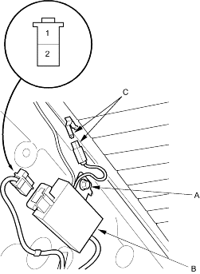

- Remove the right C-Pillar trim (see page 20-35)
- Make sure the antenna module mounting bolt (A) is torqued to 9.8 Nm (1.0 kgf/m, 7.2 lbf/ft).
Wire side of female terminals

- Disconnect the 2P connector from the antenna module (B).
- Turn the ignition switch ON (II), and turn the rear window defogger switch ON.
- Check for voltage between the No. 2 terminal and body ground. There should be battery voltage.
If there is no voltage, check for.
- Faulty rear window defogger relay.
- Blown No. 11 (40 A) fuse in the under-hood fuse/relay box.
- An open in the BLK/YEL wire.
- Check for continuity between No. 1 terminal and audio unit 20P connector No. 1 terminal. There should be continuity.
If there is no continuity, check for an open in the YEL/GRN wire.
- Disconnect the rear window defogger (+B OUT) connector (C) from the antenna module.
- Check for continuity between the rear window defogger negative terminal connector and body ground.
There should be continuity.
If there is no continuity, check for.
- An open in the BLK wire.
- An open in the rear window defogger wire (see page 22-45).
- Poor ground (G701).